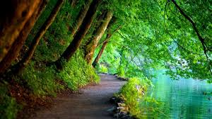

Wedding photography
This is a mixture of many other photographic genres. It incorporates portraiture, family and group photography, documentary, boudoir, event, and close-up images. Perhaps it even incorporates landscapes. This is especially true if the location is particularly beautiful or important.Nature photography
This is a wide range of photography taken outdoors and devoted to displaying natural elements such as landscapes, wildlife, plants, and close-ups of natural scenes and textures.

Animal photography
This is a loosely-defined profession which demands a passion for nature and art. Wildlife photographers make a career of traveling to remote areas and taking pictures of wild animals and natural scenery.

